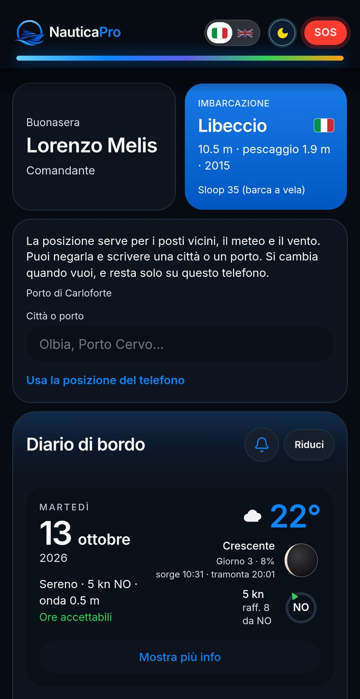
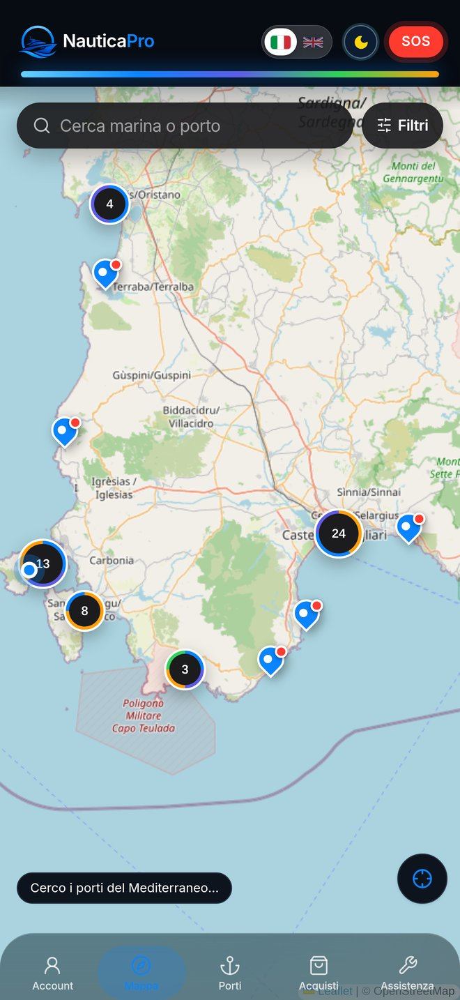
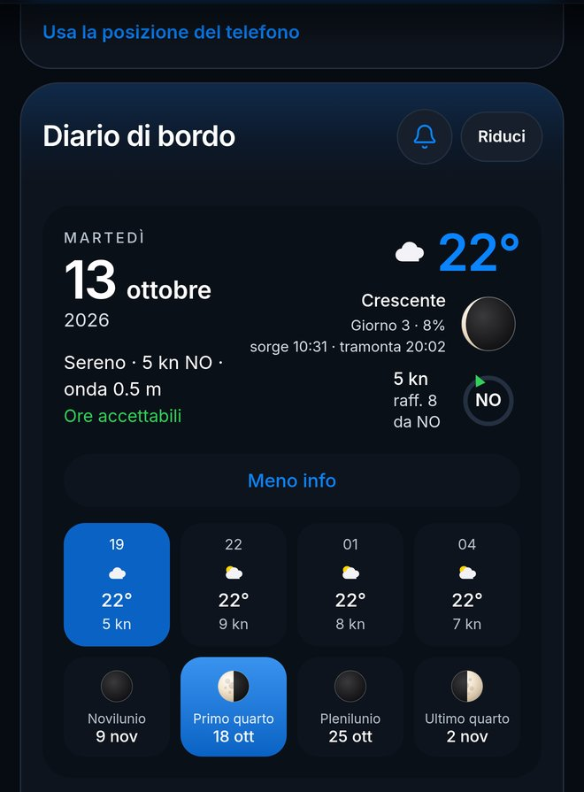
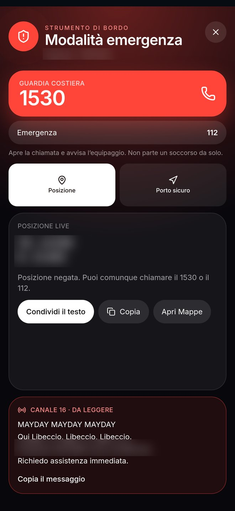

The app for life at sea
NauticaPro brings together in one app what you need before you cast off and while you're under way. Whether you're just starting out or have years at sea behind you.
Try NauticaPro
Search for a port or marina and find it on the map.
Temperature, wind, waves and the upcoming moon phases.
Your boat's profile, with all its details.
Whoever comes aboard joins your boat.
Emergency numbers, position and MAYDAY message ready to go.
Day-by-day notes and lists, shared with your crew.
Mark waypoints on the chart and see the miles and heading between each one.
The information that matters, at a glance.
Explore ports and marinas on the map and find what you're looking for.

Conditions for today and the days ahead, together with the moon.

Emergency mode opens from the SOS button and puts what you need front and centre.
NauticaPro starts the call and alerts your crew: it does not send distress requests automatically.

Go to nautica-pro.com in your phone or computer browser.
Enter your boat's details.
Check ports and weather, with emergency mode one tap away.
Yes. We are working on new Pro features for those who want a little more on board. We are not revealing anything else for now: follow us on social media to be the first to know.
No. NauticaPro is a web app: you open it in your phone or computer browser at nautica-pro.com. If you like, you can add it to your phone's Home Screen and open it like an app.
You can sign up and try it at no cost.